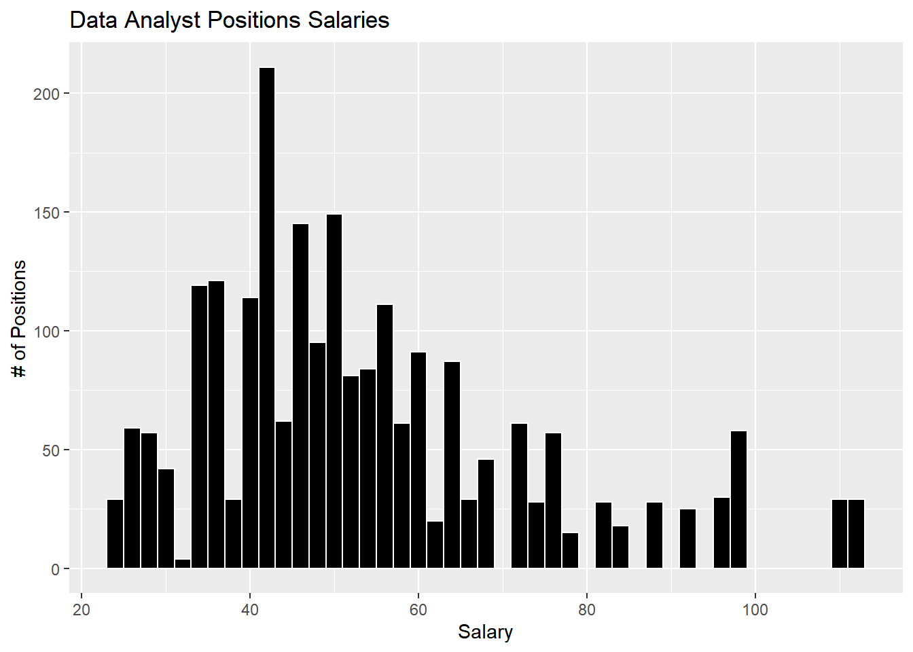
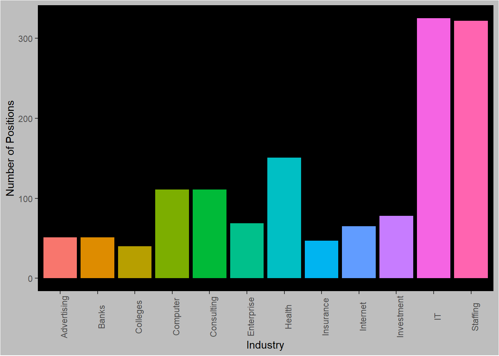
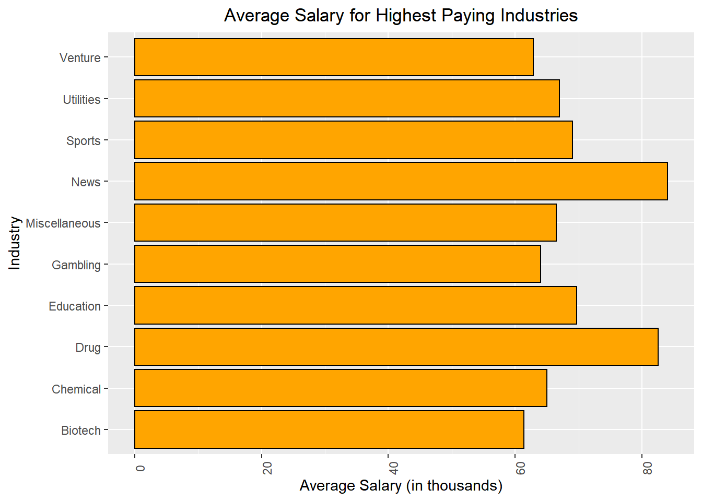
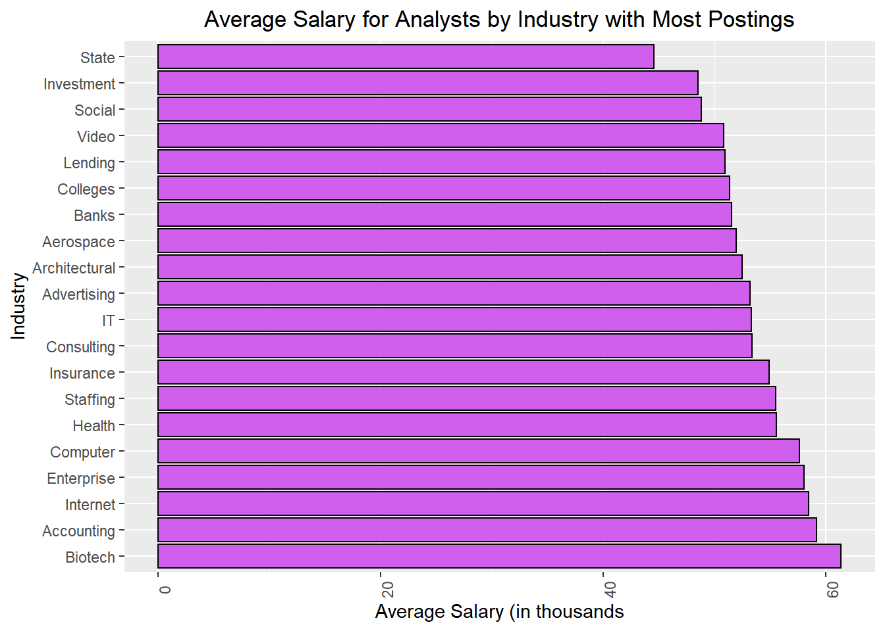
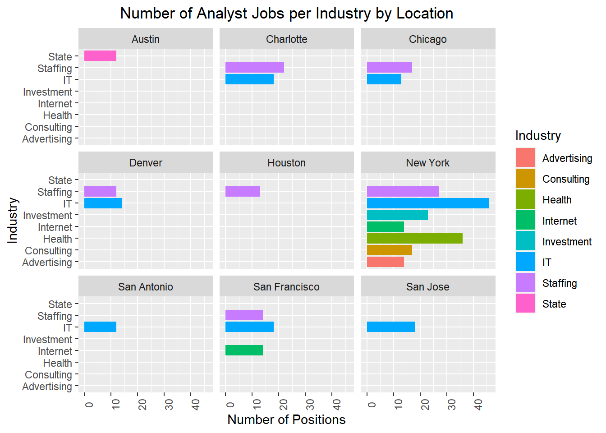
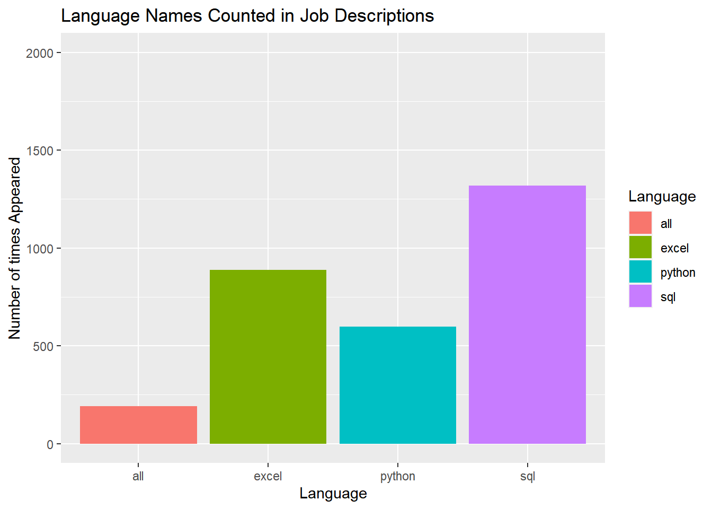
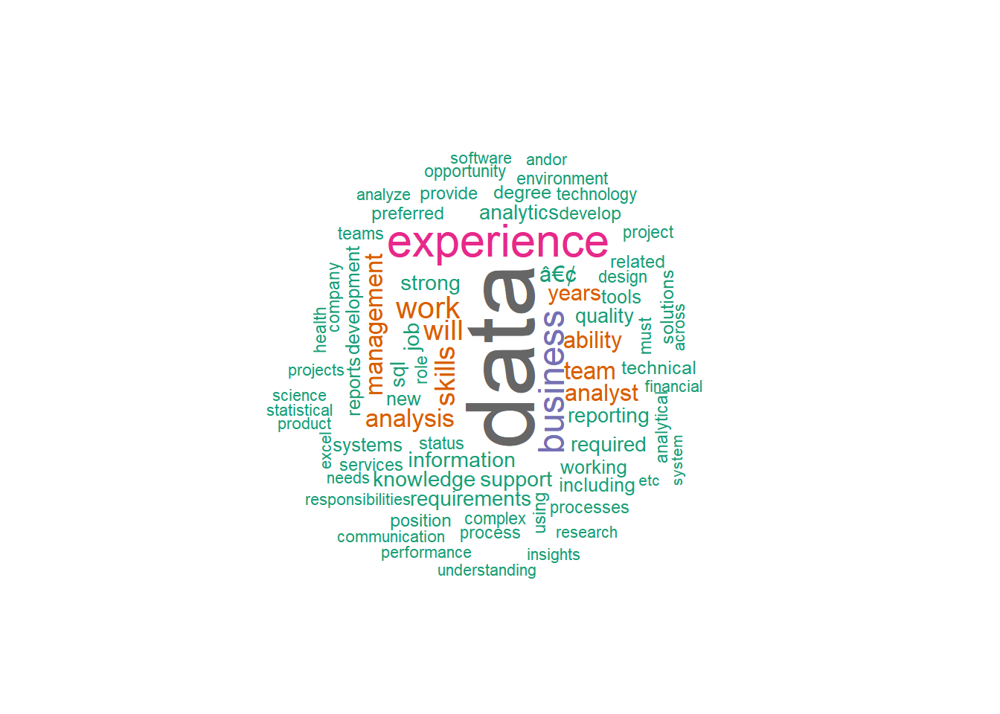
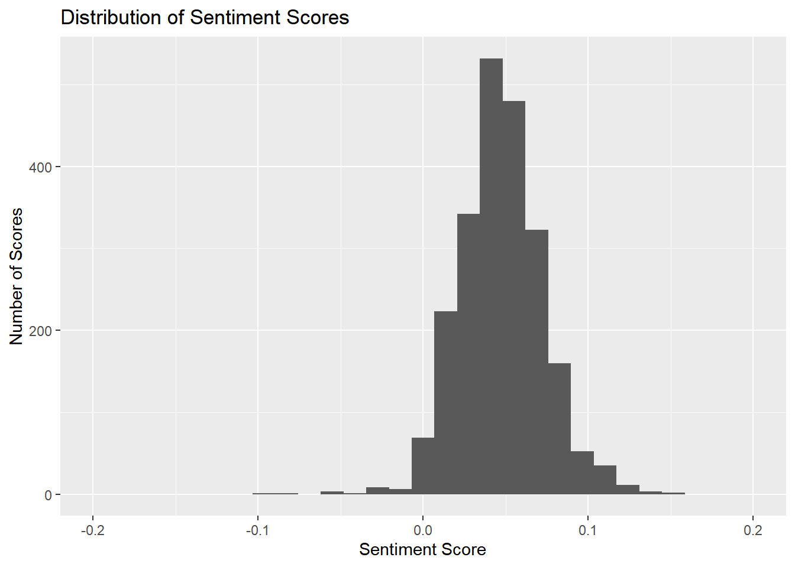

This projects data was collected using webscraping from Glassdoor to compile data analyst positions listed across the united states.
I am interested in finding out:
New York is the city with the most jobs in the most industries that are hiring right now.
Biotech is the industry which pays the most on average out of the top 20 industries with the most postings, while News pays the most overall on average.
The top industries hiring include IT, Staffing, Health Care, Computer Hardware, Consulting and many more.
A pessimistic estimate of the range of salaries for data analysts are between $29,000 -$112,000.
SQL is the most common language that data analyst positions use in this data, with Excel and Python falling behind it. A small number of positions mention using all three.
Job descriptions overall are worded slightly positive, but are fairly neutral. It is rare you’ll find any position that sounds too positive or negative overall.
I’ll take a look at the data using the glimpse() function, since head() may not print nicely because of long text strings in the fields.
## New names:
## * `` -> ...1## Observations: 2,253
## Variables: 16
## $ ...1 <dbl> 0, 1, 2, 3, 4, 5, 6, 7, 8, 9, 10, 11, 12, ...
## $ `Job Title` <chr> "Data Analyst, Center on Immigration and J...
## $ `Salary Estimate` <chr> "$37K-$66K (Glassdoor est.)", "$37K-$66K (...
## $ `Job Description` <chr> "Are you eager to roll up your sleeves and...
## $ Rating <dbl> 3.2, 3.8, 3.4, 4.1, 3.9, 3.9, 4.4, 3.7, 4....
## $ `Company Name` <chr> "Vera Institute of Justice\r\n3.2", "Visit...
## $ Location <chr> "New York, NY", "New York, NY", "New York,...
## $ Headquarters <chr> "New York, NY", "New York, NY", "New York,...
## $ Size <chr> "201 to 500 employees", "10000+ employees"...
## $ Founded <dbl> 1961, 1893, 2003, 2002, 2009, 2014, 2001, ...
## $ `Type of ownership` <chr> "Nonprofit Organization", "Nonprofit Organ...
## $ Industry <chr> "Social Assistance", "Health Care Services...
## $ Sector <chr> "Non-Profit", "Health Care", "Information ...
## $ Revenue <chr> "$100 to $500 million (USD)", "$2 to $5 bi...
## $ Competitors <chr> "-1", "-1", "GoDaddy", "-1", "DraftKings",...
## $ `Easy Apply` <dbl> 1, -1, -1, -1, 1, -1, -1, 1, -1, -1, -1, -...
Definitely will have some data cleaning to do with this. I’m going to:
| Job Title | Salary | Rating | Comp_name |
|---|---|---|---|
| Data Analyst | 37 | 3.2 | Vera Institute of |
| Quality Data Analyst | 37 | 3.8 | Visiting Nurse Service of New |
| Senior Data Analyst | 37 | 3.4 | Squarespace |
| Data Analyst | 37 | 4.1 | Celerity |
| Reporting Data Analyst | 37 | 3.9 | FanDuel |
| Data Analyst | 37 | 3.9 | Point72 |
I chose to keep the smallest value in the estimated salary range, so our data may look like salaries are on the low side.
I’ll create a histogram and print summary statistics to see what the salary range is
## Min. 1st Qu. Median Mean 3rd Qu. Max.
## 24.00 41.00 50.00 54.27 64.00 113.00
| Industry | n |
|---|---|
| IT Services | 325 |
| Staffing & Outsourcing | 322 |
| Health Care Services & Hospitals | 151 |
| Computer Hardware & Software | 111 |
| Consulting | 111 |
| Investment Banking & Asset Management | 78 |
| Enterprise Software & Network Solutions | 69 |
| Internet | 65 |
| Advertising & Marketing | 51 |
| Banks & Credit Unions | 51 |
| Insurance Carriers | 47 |
| Colleges & Universities | 40 |
| Accounting | 39 |
| Biotech & Pharmaceuticals | 33 |
| Social Assistance | 23 |
| Aerospace & Defense | 22 |
| Video Games | 20 |
| Lending | 15 |
| State & Regional Agencies | 15 |
| Architectural & Engineering Services | 13 |
Now I’ll shorten the text in the industry column to just keep the first word and create a plot to visualize the results of industries with 40 or more job postings.
| Industry | n |
|---|---|
| IT | 325 |
| Staffing | 322 |
| Health | 151 |
| Computer | 111 |
| Consulting | 111 |
| Investment | 78 |
| Enterprise | 69 |
| Internet | 65 |
| Advertising | 51 |
| Banks | 51 |
| Insurance | 47 |
| Colleges | 40 |

Let’s see how much data analysts get paid on average based on what industry they work in.
I’ll use the top 20 industries by amount of jobs postings on Glassdoor to determine this.| Industry | n |
|---|---|
| IT | 325 |
| Staffing | 322 |
| Health | 172 |
| Computer | 111 |
| Consulting | 111 |
| Investment | 78 |
| Enterprise | 69 |
| Internet | 65 |
| Advertising | 51 |
| Banks | 51 |
| Insurance | 51 |
| Colleges | 40 |
| Accounting | 39 |
| Biotech | 33 |
| Social | 23 |
| Aerospace | 22 |
| Video | 20 |
| Lending | 15 |
| State | 15 |
| Architectural | 13 |
| Industry | avg_sal |
|---|---|
| News | 84.00 |
| Drug | 82.50 |
| Education | 69.67 |
| Sports | 69.00 |
| Utilities | 67.00 |
| Miscellaneous | 66.50 |
| Chemical | 65.00 |
| Gambling | 64.00 |
| Venture | 62.83 |
| Biotech | 61.36 |
| Electrical | 60.83 |
| Transportation | 59.57 |
| Cable | 59.40 |
| Accounting | 59.15 |
| Internet | 58.43 |

Now. let’s see how much the industries with the most amount of jobs posted pay data analysts. 
Now I’ll investigate to find out what industry in what cities have the most amount of job postings. My guess would be that New York would have the most positions and the most industries that are currently hiring.
| Industry | Location | n |
|---|---|---|
| IT | New York | 46 |
| Health | New York | 36 |
| Staffing | New York | 27 |
| Investment | New York | 23 |
| Staffing | Charlotte | 22 |
| IT | Charlotte | 18 |
| IT | San Francisco | 18 |
| IT | San Jose | 18 |
| Consulting | New York | 17 |
| Staffing | Chicago | 17 |
| Advertising | New York | 14 |
| Internet | New York | 14 |
| Internet | San Francisco | 14 |
| IT | Denver | 14 |
| Staffing | San Francisco | 14 |
| IT | Chicago | 13 |
| Staffing | Houston | 13 |
| IT | San Antonio | 12 |
| Staffing | Denver | 12 |
| State | Austin | 12 |
New York appears to have the most postings. To make this list easier to comprehend, I’ll plot number of positions per industry and facet wrap by city. 
I’m going to use the job description column for this data to perform a text analysis to view trends such as what words are used the most often in job descriptions and what programming languages appear the most often.
Creating a corpus
This first thing I’ll do is create a corpus, which is a way of storing data to be used for textual analysis.
clean_data <- data_4
corpus <- SimpleCorpus(VectorSource(clean_data$`Job Description`))Cleaning the corpus
To clean the corpus to make text analysis simpler I’ll make 4 changes to it.
Stop words are common words of little value in text analysis, like “me, these, being,” etc. They appear often and don’t really provide any additional value. Here’s the fill list of stop words.
## [1] "i" "me" "my" "myself" "we"
## [6] "our" "ours" "ourselves" "you" "your"
## [11] "yours" "yourself" "yourselves" "he" "him"
## [16] "his" "himself" "she" "her" "hers"
## [21] "herself" "it" "its" "itself" "they"
## [26] "them" "their" "theirs" "themselves" "what"
## [31] "which" "who" "whom" "this" "that"
## [36] "these" "those" "am" "is" "are"
## [41] "was" "were" "be" "been" "being"
## [46] "have" "has" "had" "having" "do"
## [51] "does" "did" "doing" "would" "should"
## [56] "could" "ought" "i'm" "you're" "he's"
## [61] "she's" "it's" "we're" "they're" "i've"
## [66] "you've" "we've" "they've" "i'd" "you'd"
## [71] "he'd" "she'd" "we'd" "they'd" "i'll"
## [76] "you'll" "he'll" "she'll" "we'll" "they'll"
## [81] "isn't" "aren't" "wasn't" "weren't" "hasn't"
## [86] "haven't" "hadn't" "doesn't" "don't" "didn't"
## [91] "won't" "wouldn't" "shan't" "shouldn't" "can't"
## [96] "cannot" "couldn't" "mustn't" "let's" "that's"
## [101] "who's" "what's" "here's" "there's" "when's"
## [106] "where's" "why's" "how's" "a" "an"
## [111] "the" "and" "but" "if" "or"
## [116] "because" "as" "until" "while" "of"
## [121] "at" "by" "for" "with" "about"
## [126] "against" "between" "into" "through" "during"
## [131] "before" "after" "above" "below" "to"
## [136] "from" "up" "down" "in" "out"
## [141] "on" "off" "over" "under" "again"
## [146] "further" "then" "once" "here" "there"
## [151] "when" "where" "why" "how" "all"
## [156] "any" "both" "each" "few" "more"
## [161] "most" "other" "some" "such" "no"
## [166] "nor" "not" "only" "own" "same"
## [171] "so" "than" "too" "very"# 1. strip white space
dfCorpus <- tm_map(corpus, stripWhitespace)
# 2. Transforming everything to lowercase
dfCorpus <- tm_map(dfCorpus, content_transformer(tolower))
# 3. Removing punctuation
dfCorpus <- tm_map(dfCorpus, removePunctuation)
# 4. Removing stop words
dfCorpus <- tm_map(dfCorpus, removeWords, stopwords("english"))Here’s what the new job descriptions look similar towards after these changes
dfCorpus[[10]]$content## [1] " us riskified ai platform powering ecommerce revolution use cuttingedge technology machinelearning algorithms behavioral analytics identify legitimate customers keep moving toward checkout merchants use riskified increase revenue prevent fraud eliminate customer friction riskified reviewed hundreds millions transactions approved billions dollars revenue merchants across virtually industries including number fortune 500 companies role looking data analyst work directly customers merchant health team will part growing operations team responsible riskifieds customers performance quick problemsolving online fraud prevention real time will take major part research investigation new onlinefraud trends superdynamic environment therefore stand forefront riskifieds work youll leveraging analytical data analysis skills knowledge product provide meaningful insights enterprise merchants including direct interaction customers youll research explore data using high level analytical tools r sql high level technical environment share deep analysis conclusions sophisticated technical methods clear manner technical nontechnical audiences work account managers meet directly clients deliver analytic insights business questions define execute endtoend technical solutions fraudprevention problems cooperate various teams within riskified enhance processes meet customers needs master online fraud prevention domain handson analysis live data qualifications candidates must eligible work us without visa sponsorship including opts 2 years relevant strong analytical experience complex data 12 years handson work experience sql 12 years handson work experience r python experienced problem solver critical thinker great written verbal communication skills ability work simultaneously different tasks lead multiple projects position requires occasional evening weekend shifts schedule flexible support global client base life riskified fastgrowing dynamic startup 450 team members offices tel aviv new york city value collaboration innovative thinking looking bright driven passionate people grow us nyc benefits perks fullycovered medical dental vision insurance first day stock options employees 401k matching commuter benefits catered lunch team events healthy snacks yoga pilates soccer league news fortune magazine 25 best workplaces new york announcing riskifieds 165m funding round inc magazine best workplaces built nyc 100 best workplaces great place work riskified crains best places work new york city techcrunch riskified prevents fraud favorite ecommerce site riskified deeply committed principle equal opportunity individuals discriminate based race color religion sex sexual orientation national origin age disability veteran status status protected law"Creating a Document-Term Matrix to look for specific and most frequently occurring words
A document-term matrix is a simple way to compare all the terms or words across each document. Viewing the data simply as a matrix results in each row representing a unique document and each column representing a unique term.
## <<DocumentTermMatrix (documents: 2252, terms: 26182)>>
## Non-/sparse entries: 460338/58501526
## Sparsity : 99%
## Maximal term length: 648
## Weighting : term frequency (tf)
## Sample :
## Terms
## Docs analysis analyst business data experience management skills team
## 1211 6 4 4 22 10 22 17 1
## 1413 1 2 16 11 6 8 3 8
## 2185 11 1 1 20 14 7 1 2
## 2204 16 1 2 27 19 9 2 2
## 375 1 3 13 22 5 8 2 7
## 567 1 0 5 3 11 4 3 3
## 582 3 6 11 17 16 6 6 0
## 676 4 1 9 29 8 8 16 3
## 76 3 0 5 28 6 10 1 5
## 893 7 1 1 43 24 4 7 0
## Terms
## Docs will work
## 1211 1 3
## 1413 14 12
## 2185 17 2
## 2204 21 4
## 375 0 6
## 567 24 18
## 582 14 4
## 676 0 7
## 76 5 5
## 893 0 3We can see we have a total of 26182 terms used throughout the 2252 job descriptions in the data set. Now I’m going to search for the names of specific languages to determine what languages are most common for data analyst jobs in this data.
Note: R and Rstudio are not found in this method due to some type of syntax error, even after making the conversions to the corpus I made before.
| docs | python | sql | excel |
|---|---|---|---|
| 1 | 2 | 2 | 0 |
| 2 | 0 | 1 | 4 |
| 3 | 0 | 2 | 1 |
| 4 | 0 | 3 | 0 |
| 5 | 1 | 2 | 1 |
| 6 | 1 | 1 | 1 |
Python, SQL and Excel all have a presence in these job descriptions. Now to see how many times they are each mentioned in and what descriptions mention all 3.
# Number of descriptions that mention python
nrow(words_dtm_py)## [1] 598# Number of descriptions that mention sql
nrow(words_dtm_sql)## [1] 1318#Number of descriptions that mention excel
nrow(words_dtm_xl)## [1] 889#Number of descriptions that mention all 3 languages
nrow(words_dtm_all)## [1] 190
Good thing I’ve been brushing up on using SQL becasue it is the most common language mentioned in job descriptions, so we can assume it is the most popular language requested to have some knowledge of or that the position would use in this dataset.
Creating a word cloud of the most frequently appearing terms
Word Clouds can be interesting and different ways to view the words the appear most often. Here I’ll visualize the 75 most common words, after removing stop words that otherwise would clutter the list.
#creating word cloud of most frequent terms
sums <- as.data.frame(colSums(as.matrix(DTM)))
sums <- rownames_to_column(sums)
colnames(sums) <- c("term", "count")
sums <- arrange(sums, desc(count))
subs_sums <- sums
subs_sums <- as.data.table(subs_sums)
head <- subs_sums[1:75,]
head <- as.data.frame(head)wordcloud(words = head$term, freq = head$count, min.freq = 1000,
max.words=100, random.order=FALSE, rot.per=0.35,
colors=brewer.pal(8, "Dark2"))
Sentiments are opinions or feelings about something. So, I’ll use a sentiment analysis to capture the general feeling or tone which these job descriptions are written in. I’ll view which companies and industries have the most positively and negatively written job descriptions.
The type of sentiment analysis I will run uses the Harvard IV dictionary to detect how many negative and positive words are contained in text data. It grades the overall, positive and negative sentiment on a scale from -1 to 1.
| WordCount | SentimentGI | NegativityGI | PositivityGI |
|---|---|---|---|
| 654 | 0.0519878 | 0.0152905 | 0.0672783 |
| 433 | 0.0461894 | 0.0092379 | 0.0554273 |
| 433 | 0.1039261 | 0.0115473 | 0.1154734 |
| 498 | 0.0502008 | 0.0200803 | 0.0702811 |
| 334 | 0.0748503 | 0.0209581 | 0.0958084 |
| 253 | 0.0592885 | 0.0079051 | 0.0671937 |
Now I’ll view the overall distribution of sentiments in this data
## Min. 1st Qu. Median Mean 3rd Qu. Max.
## -0.09091 0.03224 0.04699 0.04749 0.06272 0.15385
We can see the sentiment appears to be in the shape of a normal distribution and is centered to be slightly more positive than a neutral sentiment of zero.
Viewing the most positive and negative job postings
I wanted to see what companies and what industries have the most polarizing job descriptions in terms of sentiment. First I need to bind the columns from my sentiments analysis to the rest of the data, then I can analyze them.
Here are the companies with the highest and lowest sentiments in their job descriptions.
| Comp_name | Industry | sent |
|---|---|---|
| LeadStack, | IT Services | 0.1538462 |
| LeadStack | IT Services | 0.1455696 |
| TE | Electrical & Electronic Manufacturing | 0.1428571 |
| O’Reilly | Automotive Parts & Accessories Stores | 0.1358025 |
| CVS | Health Care Services & Hospitals | 0.1234568 |
| Telligen | Health Care Services & Hospitals | 0.1225383 |
| HR | Computer Hardware & Software | 0.1194030 |
| Health & Hospital | Health Care Services & Hospitals | 0.1192661 |
| The Jupiter | Staffing & Outsourcing | 0.1167883 |
| Beacon Hill Staffing | Staffing & Outsourcing | 0.1164659 |
| Comp_name | Industry | sent |
|---|---|---|
| Advent Global Solutions, | IT Services | -0.0602410 |
| iSpace, | IT Services | -0.0588235 |
| Tecolote | Aerospace & Defense | -0.0354610 |
| Pareto | IT Services | -0.0266667 |
| Sharpedge Solutions | Publishing | -0.0227273 |
| DATA | IT Services | -0.0195503 |
| SACC | IT Services | -0.0121951 |
| silverXis | IT Services | -0.0096154 |
| UTHealth | Colleges & Universities | -0.0042918 |
| JPMorgan Chase & | Investment Banking & Asset Management | -0.0033445 |
Now the industries with the highest and lowest sentiment.
| Industry | sent |
|---|---|
| Security Services | 0.0948867 |
| News Outlet | 0.0913043 |
| Legal | 0.0822848 |
| Audiovisual | 0.0775623 |
| Hotels, Motels, & Resorts | 0.0716724 |
| Preschool & Child Care | 0.0707745 |
| Electrical & Electronic Manufacturing | 0.0681120 |
| Food & Beverage Stores | 0.0662352 |
| Transportation Management | 0.0636109 |
| Grocery Stores & Supermarkets | 0.0611021 |
| Industry | sent |
|---|---|
| General Merchandise & Superstores | 0.0270218 |
| Health Fundraising Organizations | 0.0277996 |
| Building & Personnel Services | 0.0306373 |
| Oil & Gas Services | 0.0314501 |
| Education Training Services | 0.0332469 |
| IT Services | 0.0344016 |
| Metals Brokers | 0.0347594 |
| Pet & Pet Supplies Stores | 0.0355450 |
| Publishing | 0.0359135 |
| Sporting Goods Stores | 0.0367893 |
Sentiments appear pretty neutral in general. I suppose it is intuitive that you’re not going to find anything too joyful or dark in a data-analyst job description.